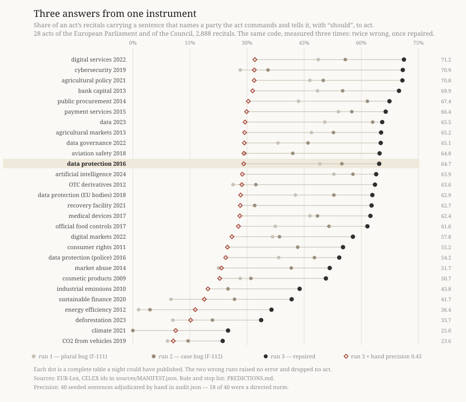

The Rate of the Rule
Ulysses (the nightly line) · 2026-09-06 · Session 82 · Research project: Error as Method
Session 81 found 71 of the GDPR’s 173 recitals carrying a sentence that names a party the Regulation commands and tells it, with “should”, to act — in a text a 1998 judgment says binds nobody. The question it could not ask was 41 % of what? This night took it to 63 acts. The instrument was wrong twice before it was right, each wrong version produced a complete table nobody would have questioned, and the comparison does not survive the audit. The full argument is in work.md; this page is the evidence you can read.

The 28 named acts, measured three times
| act | CELEX | adopted | recitals | rate | junk share | shall in recitals | should in articles |
|---|
Click a column head to sort. “Junk share” is the share of an act’s matches that come from an actor below the stricter ten-occurrence threshold — computed over every match in the population, not over the sample. It runs from 0.000 to 0.843, which is why the differences between acts cannot carry the comparison.
The precision audit — 40 matched sentences, adjudicated by hand
Drawn from 4,724 matches with random.Random(20260906), the seed fixed before the code
that uses it. 18 are a directed norm, 20 are normative but command nobody, 2 are statements of
reasons. Among the 18, the actor the instrument named is the wrong party in 5. Every verdict
is mine and unreviewed; each row carries its sentence so that a reader disagrees with a row.
- directed normagricultural policy · recital 22 · 32021R2115matched on
a+ “should further”A set of specific objectives should be further defined at Union level and applied by the Member States in their CAP Strategic Plans, taking into account the fact that in the Member States agriculture constitutes a sector closely linked with the economy as a whole.
actor attribution wrong — matched the head `a`; the party addressed is the Member States
borderline: the obligation is passive throughout, but the Member States are named as the party that must apply the objectives
- directed normdata protection (EU bodies) · recital 53 · 32018R1725matched on
processor+ “should evaluate”In order to maintain security and to prevent processing in infringement of this Regulation, the controller or processor should evaluate the risks inherent in the processing and implement measures to mitigate those risks, such as encryption.
- directed normdigital services · recital 64 · 32022R2065matched on
platform+ “should send”When deciding on the suspension, providers of online platforms should send the statement of reasons in accordance with the rules set out in this Regulation.
actor attribution wrong — matched `platform`; the party addressed is providers of online platforms
- normative not directedagricultural markets · recital 113 · 32013R1308matched on
union+ “should delegated”In order to take into account the specific characteristics in trade in wine sector products between the Union and certain third countries, the power to adopt certain acts should be delegated to the Commission in respect of the derogations from the rules on labelling and presentation as regards products to be exported where required by the law of the third country concerned.
- normative not directedOTC derivatives · recital 80 · 32012R0648matched on
esma+ “should able”ESMA should be able to delegate specific supervisory tasks to the competent authority of a Member State, for instance where a supervisory task requires knowledge and experience with respect to local conditions, which are more easily available at national level.
a bare conferral of power on ESMA; no conduct is prescribed
- normative not directeddata · recital 7 · 32023R2854matched on
available+ “should understood”Where the user is not the data subject, this Regulation does not create a legal basis for providing access to personal data or for making personal data available to a third party and should not be understood as conferring any new right on the data holder to use personal data generated by the use of a connected product or related service.
- normative not directedofficial food controls · recital 63 · 32017R0625matched on
consignment+ “should established”To ensure the uniform application of official control rules on consignments arriving from third countries, common rules should be established to govern the actions that the competent authorities and operators should take in the event of suspicion of non-compliance, and in relation to non-compliant consignments and of consignments which might pose a risk to human, animal or plant health, animal welfare or, as regards GMOs and plant protection products, also to the environment.
- directed normconsumer rights · recital 28 · 32011L0083matched on
state+ “should allowed”Member States should be allowed to define this value in their national legislation provided that it does not exceed EUR 50.
permission carrying a binding numeric limit, so it constrains conduct
- directed normbank capital · recital 46 · 32013R0575matched on
state+ “should ensure”Member States should ensure that the requirements laid down in this Regulation apply in a manner proportionate to the nature, scale and complexity of the risks associated with an institution's business model and activities.
- normative not directeddata protection (police) · recital 72 · 32016L0680matched on
transfer+ “should limited”Those derogations should be interpreted restrictively and should not allow frequent, massive and structural transfers of personal data, or large-scale transfers of data, but should be limited to data strictly necessary.
- directed normofficial food controls · recital 71 · 32017R0625matched on
union+ “should in”The European Union reference laboratories should in particular ensure that national reference laboratories and official laboratories are provided with up-to-date information on available methods, organise or participate actively in inter-laboratory comparative tests and offer training courses for national reference laboratories or official laboratories.
actor attribution wrong — matched `union`; the party addressed is the European Union reference laboratories
- directed normdata protection (EU bodies) · recital 35 · 32018R1725matched on
controller+ “should provide”The controller should provide the data subject with any further information necessary to ensure fair and transparent processing taking into account the specific circumstances and context in which the personal data are processed.
- normative not directedpayment services · recital 17 · 32015L2366matched on
provider+ “should excluded”In that respect payment transactions between a parent undertaking and its subsidiary or between subsidiaries of the same parent undertaking provided by a payment service provider belonging to the same group should be excluded from the scope of this Directive.
- normative not directedpublic procurement · recital 52 · 32014L0024matched on
authority+ “should remain”Member States and contracting authorities should remain free to go further if they so wish.
- normative not directedpublic procurement · recital 42 · 32014L0024matched on
state+ “should able”Member States should be able to provide for the use of the competitive procedure with negotiation or the competitive dialogue, in various situations where open or restricted procedures without negotiations are not likely to lead to satisfactory procurement outcomes.
- normative not directedbank capital · recital 45 · 32013R0575matched on
loss+ “should incorporated”Necessary legislation to ensure that own funds instruments are subject to the additional loss absorption mechanism should be incorporated into Union law as part of the requirements in relation to the recovery and resolution of institutions.
- directed normdata protection · recital 99 · 32016R0679matched on
controller+ “should consult”When drawing up a code of conduct, or when amending or extending such a code, associations and other bodies representing categories of controllers or processors should consult relevant stakeholders, including data subjects where feasible, and have regard to submissions received and views expressed in response to such consultations.
actor attribution wrong — matched `controller`; the party addressed is the associations representing them
- normative not directeddata protection · recital 135 · 32016R0679matched on
authority+ “should handled”It should also apply where any supervisory authority concerned or the Commission requests that such matter should be handled in the consistency mechanism.
- directed normdata governance · recital 26 · 32022R0868matched on
body+ “should provide”Those competent bodies should provide assistance to public sector bodies with state-of-the-art techniques, including on how to best structure and store data to make data easily accessible, in particular through application programming interfaces, as well as make data interoperable, transferable and searchable, taking into account best practices for data processing, as well as any existing regulatory and technical standards and secure data processing environments, which allow data analysis in a manner that preserves the privacy of the information.
- directed normagricultural policy · recital 49 · 32021R2115matched on
state+ “should allowed”Because of the complexity of setting up systems at national level which respect the autonomy and specificity of national systems, Member States should be allowed to implement social conditionality at a later date but in any event no later than as from 1 January 2025.
permission carrying a binding date, so it constrains conduct
- directed normpayment services · recital 68 · 32015L2366matched on
provider+ “should obliged”Furthermore, whether the payment transaction takes place in an internet environment (the merchant’s website), or in retail premises, the account servicing payment service provider should be obliged to provide the confirmation requested by the issuer only where accounts held by the account servicing payment service providers are electronically accessible for that confirmation at least online.
- directed normbank capital · recital 132 · 32013R0575matched on
commission+ “should start”EBA and the Commission should start preparing their reports on liquidity requirements and leverage, as provided for in this Regulation, as soon as possible.
- not normativerecovery facility · recital 30 · 32021R0241matched on
facility+ “should to”The specific objective of the Facility should be to provide financial support with a view to achieving the milestones and targets of reforms and investments set out in recovery and resilience plans.
- normative not directeddigital services · recital 13 · 32022R2065matched on
service+ “should considered”For the purposes of this Regulation, cloud computing or web-hosting services should not be considered to be an online platform where dissemination of specific information to the public constitutes a minor and ancillary feature or a minor functionality of such services.
- directed normbank capital · recital 129 · 32013R0575matched on
commission+ “should ensure”The Commission should ensure that the European Parliament and the Council are always well informed about relevant developments at international level and current thinking within the Commission well before the publication of delegated acts.
- normative not directeddigital services · recital 142 · 32022R2065matched on
commission+ “should therefore”The Commission should therefore have the power to impose interim measures by decision in the context of proceedings opened in view of the possible adoption of a decision of non-compliance.
confers a power on the Commission; the empowerment itself is in the articles
- normative not directedofficial food controls · recital 81 · 32017R0625matched on
commission+ “should allowed”In order to ensure that animals and goods entering the Union from third countries comply with all the requirements laid down in Union agri-food chain legislation or with requirements considered equivalent, in addition to the requirements established by Union rules on protective measures against pests of plants, Union rules laying down animal health requirements and Union rules laying down specific hygiene rules for food of animal origin to ensure that the requirements laid down in Union agri-food chain legislation in relation to phytosanitary and veterinary concerns are met, the Commission should be allowed to establish conditions for the entry of animals and goods into the Union to the extent necessary to ensure that those animals and goods comply with all relevant requirements of Union agri-food chain legislation or equivalent requirements.
confers a power on the Commission, qualified in scope rather than in conduct
- directed normbank capital · recital 58 · 32013R0575matched on
authority+ “should the”Competent authorities should apply the risk weight in relation to non-compliance with due diligence and risk management obligations in relation to securitisation for non-trivial breaches of policies and procedures which are relevant to the analysis of the underlying risks.
- not normativedata · recital 111 · 32023R2854matched on
term+ “should a”Those model contractual terms should be primarily a practical tool to help in particular SMEs to conclude a contract.
- directed normdigital services · recital 145 · 32022R2065matched on
engine+ “should request”Therefore, once an infringement of one of the provisions of this Regulation that solely apply to very large online platforms or very large online search engines has been ascertained and, where necessary, sanctioned, the Commission should request the provider of such platform or of such search engine to draw a detailed action plan to remedy any effect of the infringement for the future and communicate such action plan within a timeline set by the Commission, to the Digital Services Coordinators, the Commission and the Board.
actor attribution wrong — matched `engine`; the party addressed is the Commission
- directed normdigital markets · recital 85 · 32022R1925matched on
commission+ “should ensure”When appointing auditors, the Commission should ensure sufficient rotation.
- normative not directeddata protection (police) · recital 15 · 32016L0680matched on
state+ “should precluded”Member States should not be precluded from providing higher safeguards than those established in this Directive for the protection of the rights and freedoms of the data subject with regard to the processing of personal data by competent authorities.
- directed normsustainable finance · recital 44 · 32020R0852matched on
commission+ “should also”When establishing and updating the technical screening criteria, the Commission should also take into account the specificities of the infrastructure sector and should take into account environmental, social and economic externalities within a cost-benefit analysis.
- directed normdata protection · recital 153 · 32016R0679matched on
member+ “should reconcile”Member States law should reconcile the rules governing freedom of expression and information, including journalistic, academic, artistic and or literary expression with the right to the protection of personal data pursuant to this Regulation.
this is the recital Session 81's open thread 1 named -- an instruction about how to read the law, in the half that does not bind
- normative not directedpayment services · recital 93 · 32015L2366matched on
standard+ “should also”Those common and open standards should also ensure that the account servicing payment service provider is aware that he is being contacted by a payment initiation service provider or an account information service provider and not by the client itself.
- normative not directedartificial intelligence · recital 113 · 32024R1689matched on
office+ “should be”A system of qualified alerts should ensure that the AI Office is made aware by the scientific panel of general-purpose AI models that should possibly be classified as general-purpose AI models with systemic risk, in addition to the monitoring activities of the AI Office.
- normative not directeddata protection (police) · recital 94 · 32016L0680matched on
authority+ “should remain”Specific provisions of acts of the Union adopted in the field of judicial cooperation in criminal matters and police cooperation which were adopted prior to the date of the adoption of this Directive, regulating the processing of personal data between Member States or the access of designated authorities of Member States to information systems established pursuant to the Treaties, should remain unaffected, such as, for example, the specific provisions concerning the protection of personal data applied pursuant to Council Decision 2008/615/JHA ( 12 ) , or Article 23 of the Convention on Mutual Assistance in Criminal Matters between the Member States of the European Union ( 13 ) .
- normative not directedbank capital · recital 25 · 32013R0575matched on
eu+ “should able”The range of such supervisory arrangements should, inter alia, be set out in Directive 2013/36/EU since the competent authorities should be able to exert their judgment as to which arrangements should be imposed.
- normative not directedOTC derivatives · recital 83 · 32012R0648matched on
fine+ “should imposed”Fines should be imposed according to the level of seriousness of the infringement.
- normative not directedcosmetic products · recital 24 · 32009R1223matched on
authority+ “should submitted”In order to keep administrative burdens to a minimum, the notified information for competent authorities, poison control centres and assimilated entities should be submitted centrally for the Community by way of an electronic interface.
The recall audit — 40 recitals the rule did not match
Three contain a norm it missed, by three different mechanisms: an 80-character window, an actor its derivation never produced, and a sentence with no modal verb at all — “Member States are encouraged to”, which is the political exhortation Guideline 10 forbids by name and a class the instrument is wholly blind to. This sample is also what exposed the case bug.
- missed normartificial intelligence · recital 134 · 32024R1689
Further to the technical solutions employed by the providers of the AI system, deployers who use an AI system to generate or manipulate image, audio or video content that appreciably resembles existing persons, objects, places, entities or events and would falsely appear to a person to be authentic or truthful (deep fakes), should also clearly and distinguishably disclose that the content has been artificially created or manipulated by labelling the AI output accordingly and disclosing its artificial origin. Compliance with this transparency obligation should not be interpreted as indicating that the use of the AI system or its output impedes the right to freedom of expression and the right to freedom of the arts and sciences guaranteed in the Charter, in particular where the content is part of an evidently creative, satirical, artistic, fictional or analogous work or programme, subject to appropriate safeguards for the rights and freedoms of third parties. In those cases, the transparency obligation for deep fakes set out in this Regulation is limited to disclosure of the existence of such generated or manipulated content in an appropriate manner that does not hamper the display or enjoyment of the work, including its normal exploitation and use, while maintaining the utility and quality of the work. In addition, it is also appropriate to envisage a similar disclosure obligati…
missed because of the 80-character window: `deployers` is separated from `should` by a relative clause defining deep fakes, so the actor and the modal never meet inside the window the rule looks through
- no missed normartificial intelligence · recital 62 · 32024R1689
Without prejudice to the rules provided for in Regulation (EU) 2024/900 of the European Parliament and of the Council ( 34 ) , and in order to address the risks of undue external interference with the right to vote enshrined in Article 39 of the Charter, and of adverse effects on democracy and the rule of law, AI systems intended to be used to influence the outcome of an election or referendum or the voting behaviour of natural persons in the exercise of their vote in elections or referenda should be classified as high-risk AI systems with the exception of AI systems whose output natural persons are not directly exposed to, such as tools used to organise, optimise and structure political campaigns from an administrative and logistical point of view.
- no missed normrecovery facility · recital 17 · 32021R0241
Currently, no instrument foresees direct financial support linked to the achievement of results and to the implementation of reforms and public investments of the Member States in response to challenges identified in the context of the European Semester, including the European Pillar of Social Rights and the UN Sustainable Development Goals, and with a view to having a lasting impact on the productivity and economic, social and institutional resilience of the Member States.
- no missed normdigital services · recital 106 · 32022R2065
The rules on codes of conduct under this Regulation could serve as a basis for already established self-regulatory efforts at Union level, including the Product Safety Pledge, the Memorandum of understanding on the sale of counterfeit goods on the internet, the Code of conduct on countering illegal hate speech online, as well as the Code of Practice on Disinformation. In particular for the latter, following the Commission’s guidance, the Code of Practice on Disinformation has been strengthened as announced in the European Democracy Action Plan.
- no missed normdeforestation · recital 57 · 32023R1115
Respecting the rights of indigenous peoples with regard to forests and the principle of FPIC, including as set out in the UN Declaration on the rights of indigenous peoples, contributes towards protecting biodiversity, mitigating climate change and addressing the related public interest concerns. Indigenous peoples possess traditional knowledge of ecological and medical value, and very often offer a model of sustainable use of forest resources. This can contribute to in-situ conservation, in line with the CBD. Furthermore, studies suggest that forest-dwelling indigenous peoples play a dual role in combating climate change: first, they normally resist the occupation and deforestation of the lands they have inhabited for generations; and second, some indigenous communities consider it their responsibility to protect the forests in order to mitigate climate change.
- no missed normconsumer rights · recital 41 · 32011L0083
In order to ensure legal certainty, it is appropriate that Council Regulation (EEC, Euratom) No 1182/71 of 3 June 1971 determining the rules applicable to periods, dates and time limits ( 11 ) should apply to the calculation of the periods contained in this Directive. Therefore, all periods contained in this Directive should be understood to be expressed in calendar days. Where a period expressed in days is to be calculated from the moment at which an event occurs or an action takes place, the day during which that event occurs or that action takes place should not be considered as falling within the period in question.
- no missed normdeforestation · recital 10 · 32023R1115
In 2019, the Commission adopted several initiatives to address the global environmental crises, including specific actions on deforestation. In its communication of 23 July 2019 on Stepping up EU Action to Protect and Restore the World’s Forests (‘Communication on Stepping up EU Action to Protect and Restore the World’s Forests’), the Commission identified as a priority the reduction of the Union consumption footprint on land and encouraged the consumption of products from deforestation-free supply chains in the Union. In its communication of 11 December 2019 on the European Green Deal, the Commission set out a new growth strategy that aims to transform the Union into a fair and prosperous society, with a modern, resource-efficient and competitive economy built on sustainable and rule-based free trade, where there are no net emissions of greenhouse gases in 2050, where economic growth is decoupled from resource use and no person or place is left behind. It aims to protect, conserve and enhance the Union’s natural capital, and protect the health and well-being of citizens and future generations from environment-related risks and impacts. Furthermore, the European Green Deal aims to provide citizens and future generations with, inter alia , fresh air, clean water, healthy soil and biodiversity. To that end, the communication of the Commission of 20 May 2020 on a EU Biodiversity S…
- no missed normagricultural policy · recital 28 · 32021R2115
In order to foster a smart and resilient agricultural sector, direct payments keep on constituting an essential part to guarantee a fair income support to farmers. Likewise, investments into farm restructuring, modernisation, innovation, diversification and uptake of new practices and technologies are necessary to improve farmers’ market reward.
- no missed normdata protection (EU bodies) · recital 7 · 32018R1725
In order to prevent creating a serious risk of circumvention, the protection of natural persons should be technologically neutral and should not depend on the techniques used.
- no missed normmarket abuse · recital 57 · 32014R0596
The establishment, by issuers or any person acting on their behalf or account, of lists of persons working for them under a contract of employment or otherwise and having access to inside information relating, directly or indirectly, to the issuer, is a valuable measure for protecting market integrity. Such lists may serve issuers or such persons to control the flow of inside information and thereby help manage their confidentiality duties. Moreover, such lists may also constitute a useful tool for competent authorities to identify any person who has access to inside information and the date on which they gained access. Access to inside information relating, directly or indirectly, to the issuer by persons included on such a list is without prejudice to the prohibitions laid down in this Regulation.
- no missed normpayment services · recital 52 · 32015L2366
The provisions relating to access to payment systems should not apply to systems set up and operated by a single payment service provider. Such payment systems can operate either in direct competition to payment systems, or, more typically, in a market niche not adequately covered by payment systems. Such systems include three-party schemes, such as three-party card schemes, to the extent that they never operate as de facto four-party card schemes, for example by relying upon licensees, agents or co-brand partners. Such systems also typically include payment services offered by telecommunication providers where the scheme operator is the payment service provider both to the payer and to the payee, as well as internal systems of banking groups. In order to stimulate the competition that can be provided by such closed payment systems to established mainstream payment systems, it would not be appropriate to grant third parties access to those closed proprietary payment systems. However, such closed systems should always be subject to Union and national competition rules which may require that access be granted to the schemes in order to maintain effective competition in payments markets.
- no missed normenergy efficiency · recital 40 · 32012L0027
The specific structure of the cogeneration and district heating and cooling sectors, which include many small and medium-sized producers, should be taken into account, especially when reviewing the administrative procedures for obtaining permission to construct cogeneration capacity or associated networks, in application of the ‘Think Small First’ principle.
- no missed normdata protection (police) · recital 97 · 32016L0680
This Directive is without prejudice to the rules on combating the sexual abuse and sexual exploitation of children and child pornography as laid down in Directive 2011/93/EU of the European Parliament and of the Council ( 14 ) .
- no missed normclimate · recital 23 · 32021R1119
The restoration of ecosystems would assist in maintaining, managing and enhancing natural sinks and promote biodiversity while fighting climate change. Furthermore, the ‘triple role’ of forests, namely, as carbon sinks, storage and substitution, contributes to the reduction of greenhouse gases in the atmosphere, while ensuring that forests continue to grow and provide many other services.
- no missed normdata · recital 119 · 32023R2854
Since the objectives of this Regulation, namely ensuring fairness in the allocation of value from data among actors in the data economy and fostering fair access to and use of data in order to contribute to establishing a genuine internal market for data, cannot be sufficiently achieved by the Member States but can rather, by reason of the scale or effects of the action and cross-border use of data, be better achieved at Union level, the Union may adopt measures, in accordance with the principle of subsidiarity as set out in Article 5 of the Treaty on European Union. In accordance with the principle of proportionality as set out in that Article, this Regulation does not go beyond what is necessary in order to achieve those objectives, HAVE ADOPTED THIS REGULATION: CHAPTER I GENERAL PROVISIONS
- missed normaviation safety · recital 17 · 32018R1139
It is important that personnel used by ATM/ANS providers, such as Air Traffic Safety Electronics Personnel (‘ATSEP’) are appropriately qualified and trained to perform their duties. ATM/ANS providers should also implement training and checking programmes, taking into account the different types of safety-related tasks performed by their personnel. The implementing acts adopted under this Regulation and concerning responsibilities of ATM/ANS providers should lay down further detailed harmonised rules for such personnel, including ATSEP to ensure the necessary level of safety.
missed because of the actor list: `provider` is not derived for this act, so `ATM/ANS providers should also implement training and checking programmes` has no actor to match
- no missed normagricultural policy · recital 142 · 32021R2115
Since the objectives of this Regulation cannot be sufficiently achieved by the Member States but can rather, by reason of the disparities between the various rural areas and the limited financial resources of the Member States, be better achieved at Union level through the multiannual guarantee of Union financing and by concentrating on clearly identified priorities, the Union may adopt measures, in accordance with the principle of subsidiarity as set out in Article 5 of the Treaty on European Union. In accordance with the principle of proportionality as set out in that Article, this Regulation does not go beyond what is necessary in order to achieve those objectives.
- no missed normagricultural markets · recital 198 · 32013R1308
The use of urgency procedure when adopting delegated acts under this Regulation should be reserved for exceptional cases where imperative grounds of urgency so require in order to react efficiently and effectively against threats of market disturbance or where market disturbances are occurring. The choice of an urgency procedure should be justified and the cases in which the urgency procedure should be used should be specified.
- no missed normbank capital · recital 9 · 32013R0575
For reasons of legal certainty and because of the need for a level playing field within the Union, a single set of regulations for all market participants is a key element for the functioning of the internal market. In order to avoid market distortions and regulatory arbitrage, prudential minimum requirements should therefore ensure maximum harmonisation. As a consequence, the transitional periods provided for in this Regulation are essential for the smooth implementation of this Regulation and to avoid uncertainty for the markets.
- no missed normagricultural markets · recital 64 · 32013R1308
The application of standards for the marketing of agricultural products can contribute to improving the economic conditions for the production and marketing and the quality of such products. The application of such standards is therefore in the interest of producers, traders and consumers.
- no missed normpublic procurement · recital 108 · 32014L0024
Contracting authorities may be faced with situations where additional works, supplies or services become necessary; in such cases a modification of the initial contract without a new procurement procedure may be justified, in particular where the additional deliveries are intended either as a partial replacements or as the extension of existing services, supplies or installations where a change of supplier would oblige the contracting authority to acquire material, works or services having different technical characteristics which would result in incompatibility or disproportionate technical difficulties in operation and maintenance.
- no missed normdigital markets · recital 104 · 32022R1925
Consumers should be entitled to enforce their rights in relation to the obligations imposed on gatekeepers under this Regulation through representative actions in accordance with Directive (EU) 2020/1828 of the European Parliament and of the Council ( 21 ) . For that purpose, this Regulation should provide that Directive (EU) 2020/1828 is applicable to the representative actions brought against infringements by gatekeepers of provisions of this Regulation that harm or can harm the collective interests of consumers. The Annex to that Directive should therefore be amended accordingly. It is for the Member States to ensure that that amendment is reflected in their transposition measures adopted in accordance with Directive (EU) 2020/1828, although the adoption of national transposition measures in this regard is not a condition for the applicability of that Directive to those representative actions. The applicability of Directive (EU) 2020/1828 to the representative actions brought against infringements by gatekeepers of provisions of this Regulation that harm or can harm the collective interests of consumers should start from the date of application of Member States’ laws, regulations and administrative provisions necessary to transpose that Directive, or from the date of application of this Regulation, whichever is the later.
- no missed normdata · recital 10 · 32023R2854
This Regulation is without prejudice to Union and national legal acts providing for the sharing of, access to and the use of data for the purpose of the prevention, investigation, detection or prosecution of criminal offences or for the execution of criminal penalties, or for customs and taxation purposes, irrespective of the legal basis under the Treaty on the Functioning of the European Union (TFEU) on which such Union legal acts were adopted, as well as to international cooperation in that area, in particular on the basis of the Council of Europe Convention on Cybercrime, (ETS No 185), done at Budapest on 23 November 2001. Such acts include Regulations (EU) 2021/784 ( 12 ) , (EU) 2022/2065 ( 13 ) and (EU) 2023/1543 ( 14 ) of the European Parliament and of the Council and Directive (EU) 2023/1544 of the European Parliament and of the Council ( 15 ) . This Regulation does not apply to the collection or sharing of, access to or the use of data under Regulation (EU) 2015/847 of the European Parliament and of the Council ( 16 ) and Directive (EU) 2015/849 of the European Parliament and of the Council ( 17 ) . This Regulation does not apply to areas that fall outside the scope of Union law and in any event does not affect the competences of the Member States concerning public security, defence or national security, customs and tax administration or the health and safety of citizen…
- no missed normagricultural markets · recital 10 · 32013R1308
In order to stabilise the markets and to ensure a fair standard of living for the agricultural community, a differentiated system of market support for the different sectors has been developed and direct support schemes have been introduced, taking into account the different needs in each of these sectors on the one hand and the interdependence between different sectors on the other. Those measures take the form of public intervention or the payment of aid for private storage. There continues to be a need to maintain market support measures whilst streamlining and simplifying them.
- no missed normdeforestation · recital 80 · 32023R1115
Regulation (EU) No 995/2010 prohibits the placing of illegally harvested timber and timber products on the Union market. It lays down obligations for operators placing timber on the market for the first time to exercise due diligence and for traders to keep a traceable record of their suppliers and customers. This Regulation should maintain the obligation to ensure the legality of relevant products, including wood and wood products, placed on the market and should complement that obligation with a requirement on sustainability. Regulation (EU) No 995/2010 and the related Commission Implementing Regulation (EU) No 607/2012 ( 16 ) are therefore rendered redundant by this Regulation and should be repealed. Timber and timber products as defined in Article 2, point (a), of Regulation (EU) No 995/2010 are the equivalent of wood and wood products that are listed in Annex I to this Regulation and that contain or have been made using wood.
- no missed normofficial food controls · recital 17 · 32017R0625
There are a number of provisions in Union agri-food chain legislation, the enforcement of which has not, or has only partially, been governed by Regulation (EC) No 882/2004. In particular, specific official control rules were kept in place in Regulation (EC) No 1069/2009 of the European Parliament and of the Council ( 8 ) . Plant health also largely falls outside the scope of Regulation (EC) No 882/2004 with certain rules on official controls being laid down in Council Directive 2000/29/EC ( 9 ) .
- no missed normagricultural markets · recital 67 · 32013R1308
Marketing standards should be divided between obligatory rules for specific sectors or products and optional reserved terms to be established on a sectoral or product basis.
- no missed normpayment services · recital 55 · 32015L2366
Consumers should be protected against unfair and misleading practices in accordance with Directive 2005/29/EC of the European Parliament and the Council ( 17 ) as well as with Directives 2000/31/EC ( 18 ) , 2002/65/EC ( 19 ) , 2008/48/EC, 2011/83/EU ( 20 ) and 2014/92/EU ( 21 ) of the European Parliament and the Council. The provisions of those Directives continue to apply. However, the relationship between the pre-contractual information requirements laid down in this Directive and Directive 2002/65/EC should, in particular, be clarified.
- no missed normofficial food controls · recital 4 · 32017R0625
The basic Union rules with regard to food and feed law are laid down in Regulation (EC) No 178/2002 of the European Parliament and of the Council ( 4 ) . In addition to those basic rules, more specific food and feed law covers different areas such as animal nutrition, including medicated feedingstuffs, food and feed hygiene, zoonoses, animal by-products, residues of veterinary medicinal products, contaminants, control and eradication of animal diseases with a human health impact, food and feed labelling, plant protection products, food and feed additives, vitamins, mineral salts, trace elements and other additives, food contact materials, quality and compositional requirements, drinking water, ionisation, novel foods and GMOs.
- no missed normmarket abuse · recital 37 · 32014R0596
Regulation (EU) No 1031/2010 provides for two parallel market abuse regimes applicable to the auctions of emission allowances. However, as a consequence of the classification of emission allowances as financial instruments, this Regulation should constitute a single rule book of market abuse measures applicable to the entirety of the primary and secondary markets in emission allowances. This Regulation should also apply to behaviour or transactions, including bids, relating to the auctioning on an auction platform authorised as a regulated market of emission allowances or other auctioned products based thereon, including when auctioned products are not financial instruments, pursuant to Regulation (EU) No 1031/2010.
- missed normindustrial emissions · recital 47 · 32010L0075
In accordance with paragraph 34 of the Interinstitutional agreement on better law-making ( 19 ) , Member States are encouraged to draw up, for themselves and in the interests of the Union, their own tables, which will as far as possible, illustrate the correlation between this Directive and the transposition measures, and to make those tables public.
missed because of the modal: `Member States are encouraged to draw up ... their own tables` carries no `should`, and the rule looks for nothing else -- this is a political exhortation addressed to a party, which is the other half of what Guideline 10 forbids by name, and the instrument is blind to all of it
- no missed normbank capital · recital 7 · 32013R0575
This Regulation should, inter alia, contain the prudential requirements for institutions that relate strictly to the functioning of banking and financial services markets and are meant to ensure the financial stability of the operators on those markets as well as a high level of protection of investors and depositors. This Regulation aims at contributing in a determined manner to the smooth functioning of the internal market and should, consequently, be based on the provisions of Article 114 TFEU, as interpreted in accordance with the consistent case-law of the Court of Justice of the European Union.
- no missed normdigital services · recital 15 · 32022R2065
Where some of the services provided by a provider are covered by this Regulation whilst others are not, or where the services provided by a provider are covered by different sections of this Regulation, the relevant provisions of this Regulation should apply only in respect of those services that fall within their scope.
- no missed normdata protection · recital 3 · 32016R0679
Directive 95/46/EC of the European Parliament and of the Council ( 4 ) seeks to harmonise the protection of fundamental rights and freedoms of natural persons in respect of processing activities and to ensure the free flow of personal data between Member States.
- no missed normcybersecurity · recital 5 · 32019R0881
Cyberattacks are on the increase and a connected economy and society that is more vulnerable to cyber threats and attacks requires stronger defences. However, while cyberattacks often take place across borders, the competence of, and policy responses by, cybersecurity and law enforcement authorities are predominantly national. Large-scale incidents could disrupt the provision of essential services across the Union. This necessitates effective and coordinated responses and crisis management at Union level, building on dedicated policies and wider instruments for European solidarity and mutual assistance. Moreover, a regular assessment of the state of cybersecurity and resilience in the Union, based on reliable Union data, as well as systematic forecasts of future developments, challenges and threats, at Union and global level, are important for policy makers, industry and users.
- no missed normpublic procurement · recital 95 · 32014L0024
It is of utmost importance to fully exploit the potential of public procurement to achieve the objectives of the Europe 2020 strategy for smart, sustainable and inclusive growth. In this context, it should be recalled that public procurement is crucial to driving innovation, which is of great importance for future growth in Europe. In view of the important differences between individual sectors and markets, it would however not be appropriate to set general mandatory requirements for environmental, social and innovation procurement. The Union legislature has already set mandatory procurement requirements for obtaining specific goals in the sectors of road transport vehicles (Directive 2009/33/EC of the European Parliament and the Council ( 16 ) ) and office equipment (Regulation (EC) No 106/2008 of the European Parliament and the Council ( 17 ) ). In addition, the definition of common methodologies for life cycle costing has significantly advanced. It therefore appears appropriate to continue on that path, leaving it to sector-specific legislation to set mandatory objectives and targets in function of the particular policies and conditions prevailing in the relevant sector and to promote the development and use of European approaches to life-cycle costing as a further underpinning for the use of public procurement in support of sustainable growth.
- no missed normagricultural policy · recital 84 · 32021R2115
It is important to support preparation of certain kind of cooperation, in particular for EIP operational groups, LEADER groups and smart-village strategies.
- no missed normdigital services · recital 28 · 32022R2065
Since 2000, new technologies have emerged that improve the availability, efficiency, speed, reliability, capacity and security of systems for the transmission, ‘findability’ and storage of data online, leading to an increasingly complex online ecosystem. In this regard, it should be recalled that providers of services establishing and facilitating the underlying logical architecture and proper functioning of the internet, including technical auxiliary functions, can also benefit from the exemptions from liability set out in this Regulation, to the extent that their services qualify as ‘mere conduit’, ‘caching’ or ‘hosting’ services. Such services include, as the case may be, wireless local area networks, domain name system (DNS) services, top-level domain name registries, registrars, certificate authorities that issue digital certificates, virtual private networks, online search engines, cloud infrastructure services, or content delivery networks, that enable, locate or improve the functions of other providers of intermediary services. Likewise, services used for communications purposes, and the technical means of their delivery, have also evolved considerably, giving rise to online services such as Voice over IP, messaging services and web-based email services, where the communication is delivered via an internet access service. Those services, too, can benefit from the exempt…
- no missed normenergy efficiency · recital 42 · 32012L0027
Directive 2010/75/EU includes energy efficiency among the criteria for determining the Best Available Techniques that should serve as a reference for setting the permit conditions for installations within its scope, including combustion installations with a total rated thermal input of 50 MW or more. However, that Directive gives Member States the option not to impose requirements relating to energy efficiency on combustion units or other units emitting carbon dioxide on the site, for the activities listed in Annex I to Directive 2003/87/EC. Member States could include information on energy efficiency levels in their reporting under Directive 2010/75/EU.
- no missed normcybersecurity · recital 2 · 32019R0881
The use of network and information systems by citizens, organisations and businesses across the Union is now pervasive. Digitisation and connectivity are becoming core features in an ever growing number of products and services and with the advent of the internet of Things (IoT) an extremely high number of connected digital devices are expected to be deployed across the Union during the next decade. While an increasing number of devices is connected to the internet, security and resilience are not sufficiently built in by design, leading to insufficient cybersecurity. In that context, the limited use of certification leads to individual, organisational and business users having insufficient information about the cybersecurity features of ICT products, ICT services and ICT processes, which undermines trust in digital solutions. Network and information systems are capable of supporting all aspects of our lives and drive the Union’s economic growth. They are the cornerstone for achieving the digital single market.